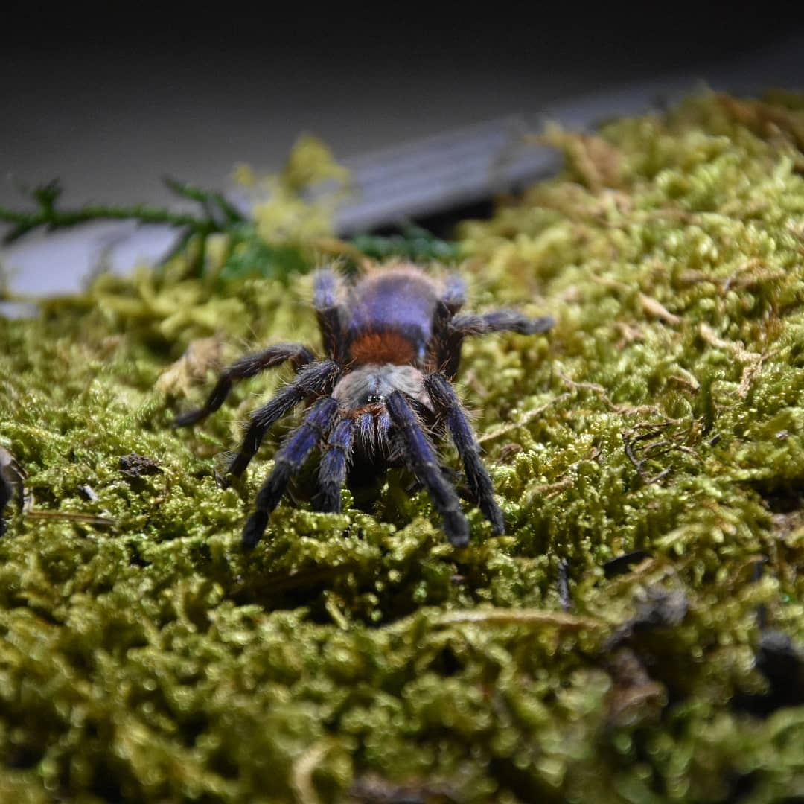
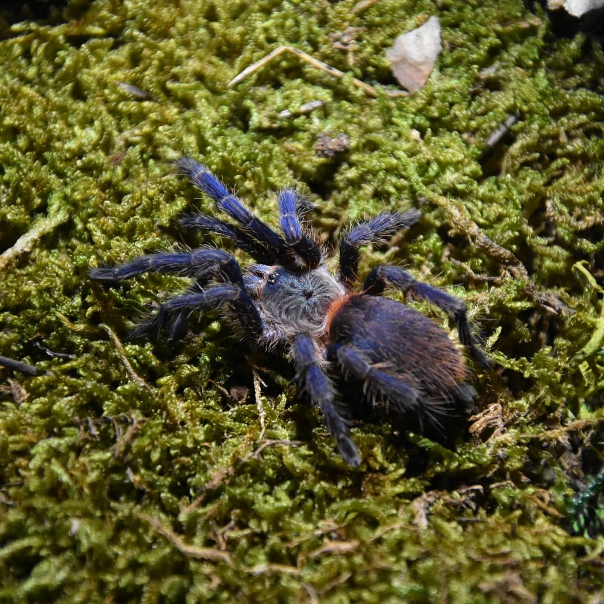
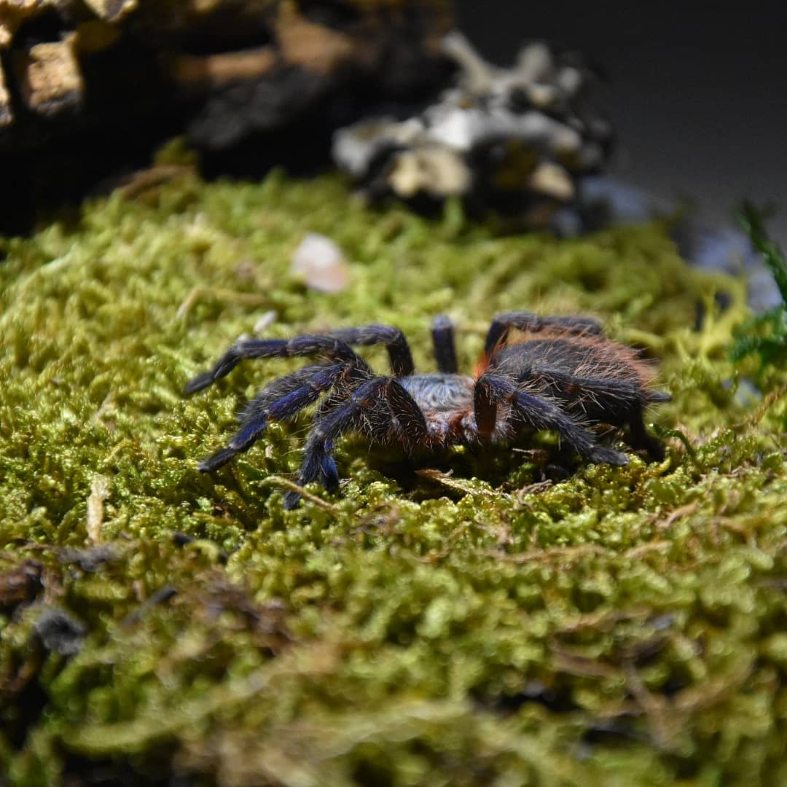

Dolichothele diamantinensis
Wygląd i rozmiary
Samice tego gatunku mogą dchodzić do 4 cm DC, samce są mniejsze około 2,5 DC. Ubarwienie dorosłego osobnika cechuje się charakterystycznym błękitno-metalicznym kolorem kontrastującym z czerwonawymi szczecinkami na opistosomie.
Długość życia
Samice dożywają do około 10-15 lat, samce padają około rok po ostaniej wylince.
Występowanie i biotop
Na wolności występuje w Brazyli ( Ameryka Południowa ).
Temperatura i wilgotność
Za dnia utrzymywać temperaturę 27-29 stopni , nocami spadki do 22 stopni. Wilgotność powinna wynosić 80%.
Cechy szczególne
Gatunek naziemny, szybki, skoczny,może być defensywny. Wyczesuje włoski parzące z odwłoka. Jad słaby.


